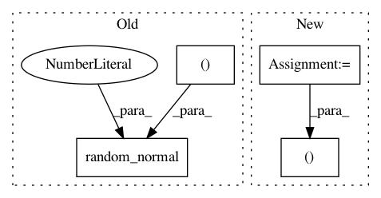

208e5d91d7f88cc1ab10ab1a4bfdd856b2691671,tensorforce/core/distributions/gaussian.py,Gaussian,create_tf_operations,#Gaussian#Any#Any#,49
Before Change
def create_tf_operations(self, x, sample=True):
mean = layers["linear"](x=x, size=1)
mean = tf.squeeze(input=mean, axis=1)
log_std_dev = tf.Variable(initial_value=tf.random_normal(shape=(), stddev=0.01))
self.distribution = (mean, log_std_dev)
if sample:
std_dev = tf.exp(x=log_std_dev)
After Change
self.mean = tf.squeeze(input=layers["linear"](x=x, size=1), axis=1)
// self.std_dev = tf.exp(tf.squeeze(input=layers["linear"](x=x, size=1), axis=1))
// self.std_dev = tf.ones_like(self.mean) * tf.exp(tf.Variable(initial_value=tf.random_normal(shape=(), stddev=0.01)))
self.std_dev = tf.ones_like(self.mean)
self.distribution = (self.mean, self.std_dev)
if sample:
self.value = self.mean + tf.multiply(x=self.std_dev, y=tf.random_normal(shape=tf.shape(self.mean)))
else:
self.value = self.mean
In pattern: SUPERPATTERN
Frequency: 3
Non-data size: 4
Instances
Project Name: reinforceio/tensorforce
Commit Name: 208e5d91d7f88cc1ab10ab1a4bfdd856b2691671
Time: 2017-05-22
Author: aok25@cl.cam.ac.uk
File Name: tensorforce/core/distributions/gaussian.py
Class Name: Gaussian
Method Name: create_tf_operations
Project Name: keras-team/keras
Commit Name: 0ba6d95e768eb7a0d74a6fda3ea893e7fb2d7a67
Time: 2018-05-10
Author: rowel.atienza@gmail.com
File Name: examples/variational_autoencoder_deconv.py
Class Name:
Method Name: sampling
Project Name: keras-team/keras
Commit Name: 0ba6d95e768eb7a0d74a6fda3ea893e7fb2d7a67
Time: 2018-05-10
Author: rowel.atienza@gmail.com
File Name: examples/variational_autoencoder.py
Class Name:
Method Name: sampling